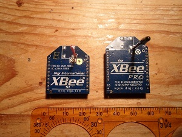
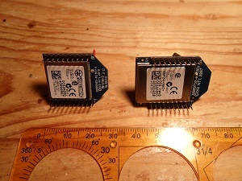

Vous n'êtes pas seuls dans l'Univers !

/
Les modules XBee - Page 1
Présentations, configurations, applications.
Les modules XBee sont des modules qui permettent d'envoyer et de recevoir des données, sans fil, et à l'aide d'un nombre de composants électroniques périphériques minimum.
1) Présentation
Les modules XBee sont des modules qui permettent d'envoyer et de recevoir des données, sans fil, performants et accessibles. Ils sont caractérisés par une portée très confortable d'une centaine de mètres en environnement d'intérieur, et jusqu'à plus d'un kilomètre en zone dégagée pour les modules XBee-PRO équipés d'une antenne adaptée.
Ils peuvent être utilisés couplés à un microcontrôleur ou de façon indépendante.
Ils sont très pratiques pour la réalisation de nombreux montages électroniques qui doivent pouvoir communiquer entre eux, dont des montages à l'utilité plus ou moins discutable.
|  |  |
{kind=link}
{kind=link}
Ces modules XBee se basent sur la norme ZigBee pour mettre en place des communications radio. Cette norme est adaptée aux réseaux personnels sans fil à faibles débits.
Elle utilise :
- 16 canaux dans la bande de fréquences 2,4 GHz,
- 10 canaux dans la bande de fréquences 900 MHz,
- 1 canal dans la bande de fréquences 868 MHz.
Il n'est pas nécessaire de connaître en
détail ce protocole de communication.
En effet, les composants électroniques présents
dans les modules se chargent de la gestion de ce dernier.
Les modules XBee fonctionnent dans la bande de fréquences de
2,4GHZ.
Ils disposent, selon leur modèle, d'une antenne
intégrée miniature,
intégrée verticale, d'un emplacement pour souder
une antenne externe, ou encore d'un connecteur pour raccorder une
antenne externe.
La portée des modules dépend bien
évidemment de l'antenne, mais aussi de la configuration de
la puissance de sortie des modules.
Celle-ci peut être réglée de
manière logicielle.
Le module XBee-PRO permet d'obtenir une puissance de sortie de 60 mW,
correspondant à 18 dBm.

Attention : En France, la législation impose que la puissance de sortie soit limitée à 10 dBm, dans la bande de fréquences utilisée par les modules XBee, et par les modules XBee-PRO.
Le tableau suivant reprend quelques caractéristiques des modules XBee et XBee-PRO.
| Modèle | XBee | XBee-PRO |
|---|---|---|
| Portée en intérieur | Jusqu'à 30 mètres | Jusqu'à 100 mètres |
| Portée en extérieur | Jusqu'à 100 mètres | Jusqu'à 1500 mètres |
| Puissance de sortie | 1 mW | 60 mW |
| Possibilité de régler la puissance de sortie de façon logicielle | Non | Oui |
| Débit des données RF | 250 000 bps | 250 000 bps |
| Débit des données UART | De 1200 bps à 115 200 bps | De 1200 bps à 115 200 bps |
| Sensibilité | -92 dBm | -100 dBm |
| Tension d'alimentation | De 2,8 V à 3,4 V | De 2,8 V à 3,4 V |
| Courant consommé lors d'une émission | 45 mA à 3,3 V |
|
| Courant consommé lors d'une attente ou d'une réception | 50 mA à 3,3 V | 50 mA à 3,3 V |
| Courant consommé en mode « SLEEP » | Moins de 10 µA | Moins de 10 µA |
 La datasheet des modules XBee et des modules XBee-PRO
La datasheet des modules XBee et des modules XBee-PRO
La consommation des modules XBee en attente ou en réception est importante. S'ils sont utilisés dans une application où la gestion de l'énergie est prépondérante, par exemple dans le cas d'un
système dont l'alimentation électrique provient de piles ou de batteries, il sera judicieux de réduire le courant consommé par les modules.
C'est le rôle du mode « SLEEP », qui se décline en différentes variantes, selon la configuration qui a été appliquée aux modules.
La broche 9 des modules peut servir à passer dans le mode « SLEEP », si un niveau logique haut y est présenté.
La sortie du mode « SLEEP » se fait si un niveau logique bas y est présenté.
La consommation peut alors être réduite de 10 µA, et la sortie se fait après un délai de 13,2 ms, ou de 50 µA avec un temps réduit à 2 ms.
Le passage en mode « SLEEP » peut également se faire de façon régulière, et le module en sortira alors à intervalles réguliers, afin de vérifier si des données sont disponibles.
Les transmissions radio peuvent se faire suivant deux modes : le mode « Unicast », ou le mode « Broadcast ».
Dans le premier mode, lorsqu'un module envoie des données, chaque module récepteur concerné envoie un accusé de réception à l'émetteur. Si l'émetteur ne reçoit pas d'accusé de réception, il réitère son envoi, jusqu'à trois fois consécutives.
Dans le second mode, chaque module récepteur concerné reçoit les données, et il n'envoie pas d'accusé de réception en retour. L'envoi des données ne se fait qu'une seule fois.
2) Configurer les modules XBee
Pour configurer les modules XBee, il faut les alimenter et leur envoyer des commandes de configuration par le biais de leurs entrées DI.
Cela peut s'effectuer en connectant les modules à une alimentation adaptée et au port série d'un ordinateur.
Si vous n'avez pas d'ordinateur équipé d'au moins un port série, vous pouvez utiliser un adaptateur USB - série, que vous trouverez dans le commerce ou que vous pourrez fabriquer.
Il est possible de construire un tel adaptateur en utilisant le circuit intégré « FT232R ».
Il existe également des cartes qui sont spécialement fabriquées pour accueillir des modules XBee.
Ces cartes permettent la connexion à un ordinateur et l'alimentation des modules grâce à un port USB.
Elles donnent également accès aux broches des modules.
{kind=link}
{kind=link}
{kind=link}
La datasheet du circuit intégré FT232R
L'envoi de commandes aux modules, et la réception des informations, nécessite qu'un terminal de liaison soit installé dans l'ordinateur.
Le module doit ensuite être placé dans le mode « commande ».
Cela s'effectue en lui envoyant la séquence « +++ ».
Si tout est bien en place, le module envoie alors la réponse « OK ».
Les commandes à envoyer ensuite aux modules sont des commandes AT, qui sont utilisées par certains modems.
Elles se présentent sous la forme :
« AT + Commande ASCII + Espace + Paramètre + Retour chariot ».
Par exemple, l'envoi de la commande « ATBD 0 » permet de régler l'interface série à 1200 bps.
La sauvegarde des modifications qui ont été effectuées se fait en envoyant la commande « ATWR ».
Pour quitter le mode « commande », dans lequel était placé le module XBee, il faut envoyer « ATCN ».

Question : Vous ne trouvez pas que ces commandes sont ou seraient un peu fastidieuses à entrer ?

Si jamais, il existe un logiciel qui a été développé par Digi, qui est la société qui fabrique les modules XBee, et qui permet de simplifier l'envoi et la réception de ces commandes.
Ce logiciel se nomme X-CTU, et il est gratuit et téléchargeable ici.
Il permet d'ouvrir le port série de son ordinateur associé au module XBee qui y est relié, ou d'utiliser le port USB qui est relié à l'interface USB - série reliée au module XBee.
X-CTU permet notamment de choisir les paramètres que l'on souhaite consulter ou appliquer au module XBee, et se charge d'envoyer et de recevoir les commandes AT correspondantes.
Les quatre onglets qu'il comporte sont les suivants :
- « PC Settings », pour permettre de configurer la connexion du module à l'ordinateur, et pour s'assurer que cette dernière est pleinement fonctionnelle,
- « Range Test », pour faire des essais de communications entre plusieurs modules,
- « Terminal », pour saisir et envoyer des commandes AT au module, ainsi que pour visualiser les données evoyées et reçues par le module,
- « Modem Configuration », pour lire et modifier l'intégralité des paramètres du module, ainsi que pour télécharger son firmware.
{kind=link}
{kind=link}
{kind=link}
Vous pouvez enregistrer une configuration et la restaurer plus tard dans le même module, ou dans un autre module du même type.
Cela est très pratique en cas d'erreur faite lors des réglages d'un module, par exemple.
Les boutons « Save » et « Load », disponibles dans l'onglet « Modem Configuration », sont à utiliser pour ces fonctionnalités.
3) Etablir une communication série, sans fil
Cet partie explique comment établir une commmunication sérielle entre un ordinateur et une carte de développement de type « STM32VLDISCOVERY », à l'aide de deux modules XBee.
Vous trouverez plus d'informations à propos des cartes de développement « STM32VLDISCOVERY » et « STM32L-DISCOVERY » sur cette page.

Remarque : Il n'est pas nécessaire d'utiliser de telles cartes de développement, pour mettre en œuvre des modules XBee.
N'importe quel microcontrôleur peut en effet être mis à contribution.
Pour bien faire les choses, il est cependant souhaitable que ce dernier dispose d'un USART.
3-1) Configuration matérielle
Ici, un des modules XBee est relié à un ordinateur par le biais d'une carte d'adaptation série - USB.
Le second module est connecté à la carte de développement STM32VLDISCOVERY grâce à une seconde carte d'adaptation, similaire à la
première, mais utilisée ici pour rendre accessibles les différentes broches du module XBee.
En effet, les supports de broches des plaques d'expérimentations standard, comme celle qui est
utilisée ici, sont disposées au pas de 2,54 millimètres, alors que les broches des modules Xbee le sont au pas de 2 millimètres.
La carte d'adaptation sert également à produire la tension de 3,3 volts, nécessaire au module, à partir de la tension d'alimentation de 5 volts, qui est disponible sur l'une des broches de la carte de développement.
Les broches de ce second module sont donc connectées, à travers la carte d'adaptation, à la carte de développement STM32VLDISCOVERY comme indiqué dans le tableau suivant.
| Carte de développement STM32VLDISCOVERY | +3,3V | 0V | PA9 | PA10 |
|---|---|---|---|---|
| Carte d'adaptation reliée au module XBee | +3,3V | 0V | TX | RX |
{kind=link}
3-2) Configuration des modules
Tout d'abord, il faut vérifier que les modules fonctionnent bien.
Pour chacun d'eux, le placer sur la carte d'adaptation série - USB, en ayant bien pris soin de ne pas la relier tout de suite à l'ordinateur.
Une fois le module correctement placé, vous pourrez relier la carte à un port USB.
Lancez alors le logiciel X-CTU, prenez l'onglet « PC Settings », et cliquez alors sur le bouton « Test/Query ».
Si tout est bien branché et en état de marche, une fenêtre s'ouvre et vous indique que la communication avec le module se passe bien, quel est son type, et quelle est la version du firmware qu'il contient.
Exemple de paramétrage des modules fonctionnel, pour l'application envisagée :
| Nom du paramètre | Module 1 | Module 2 |
|---|---|---|
| CH - Channel | C | C |
| ID - PAN ID | FFFF | FFFF |
| DH - Destination Address High | 0 | 0 |
| DL - Destination Address Low | 1234 | 5678 |
| MY - 16-bit Source Address | 5678 | 1234 |
| BD - Interface Data Rate | 7 - 115200 Bauds | 7 - 115200 Bauds |
3-3) Programmation du microcontrôleur
La programmation du microcontrôleur doit permettre de configurer l'USART, et de gérer les fonctions d'envoi et de réception de celui-ci.
Le programme suivant permet, entre autres, d'obtenir l'allumage de la led bleue lorsque l'on envoie au module XBee, côté ordinateur, le code ASCII correspondant au chiffre « 1 » (0x31), et son extinction lorsque l'on envoie le code ASCII correspondant au chiffre « 0 » (0x30).
Code source : Exemple 1 - Lecture en permanence des données reçues par l'USART 1
#include <stm32f10x_lib.h>
void Delai(int t) /* Fonction qui sert à faire perdre son temps au STM32F100RB */
{
int k;
for(k = 0; k < (100 * t); k++);
}
void ConfigurerPortC()
{
RCC->APB2ENR |= (1 << 4);
GPIOC->CRH = ((GPIOC->CRH & 0x00000000) | (0x00000033));
GPIOC->CRL = ((GPIOC->CRL & 0x00000000) | (0x30000000));
}
void ConfigurerUSART1()
{
RCC->APB2ENR |= 0x00000001; /* Activation de l'horloge pour les fonctions d'entrées-sorties alternatives */
AFIO->MAPR &= ~(1 << 2); /* Remise à zéro du USART 1 remap */
RCC->APB2ENR |= 0x00000004; /* Activation de l'horloge du port GPIOA */
GPIOA->CRH = ((GPIOA->CRH & 0xFFFFF00F) | (0x000004B0)); /* USART 1 Tx se situe sur la broche PA9,
qui doit être configurée en « Alternate Output Push-Pull »,
USART 1 Rx se situe sur la broche PA10,
qui doit être configurée en « Input Floating » */
RCC->APB2ENR |= 0x00004000; /* Activation de l'horloge de l'USART 1 */
USART1->BRR = 8000000 / 115200; /* USART1->BRR = 0b1000100* : USARTDIV 1 = 4 + (5 / 16) = 4,3125 */
USART1->CR1 = 0;
USART1->CR2 = 0;
USART1->CR3 = 0;
USART1->CR1 |= 0x0000000C; /* Activation de l'émetteur et du récepteur */
USART1->CR1 |= 0x00002000; /* Activation de l'USART 1 */
}
int ObtenirOctetRecu() /* Fonction qui attend que l'USART 1 ait reçu une donnée pour renvoyer cette donnée */
{
while (!(USART1->SR & USART_FLAG_RXNE)); /* On attend que l'USART 1 signale la réception d'un octet */
return ((int)(USART1->DR & 0x1FF)); /* L'octet que l'USART 1 a reçu
se trouve dans le registre « USART1->DR » */
}
void EnvoyerOctet(unsigned char donnee) /* Permet d'envoyer un octet par l'USART 1 */
{
while (!(USART1->SR & USART_FLAG_TXE)); /* On attend que l'USART 1 soit prêt à envoyer une donnée */
USART1->DR = donnee; /* L'envoi de 'octet par l'USART 1 démarre
quand on écrit l'octet dans le registre « USART1->DR » */
}
void EnvoyerPlusieursOctets(unsigned char *paquet) /* Permet d'envoyer une chaîne de caractères par l'USART 1 */
{
while(*paquet != '\0') /* Tant que l'on est pas arrivé à la fin de la chaîne de caractères */
{
EnvoyerOctet(*paquet); /* On envoie le caractère courant de la chaîne de caractères */
paquet++;
}
}
int main(void)
{
ConfigurerPortC(); /* Configuration des broches reliées à la LED verte et à la LED bleue */
ConfigurerUSART1(); /* Configuration de l'USART 1 : 115200 bauds */
EnvoyerPlusieursOctets("Bonjour !\r"); /* Envoi d'un message pour montrer
que la communication est fonctionnelle dans le sens STM32F100RB -> Ordinateur via les modules XBee */
while(1)
{
if(ObtenirOctetRecu() == '1')
{
GPIOC->ODR |= (1 << 8); /* Allumage de la LED bleue */
EnvoyerPlusieursOctets("LED bleue allumée !\r"); /* Envoi d'un accusé de réception
de la demande d'allumage de la LED bleue */
Delai(10000);
}
if(ObtenirOctetRecu() == '0')
{
GPIOC->ODR &= ~(1 << 8); /* Extinction de la LED bleue */
EnvoyerPlusieursOctets("LED bleue éteinte !\r"); /* Envoi d'un accusé de réception
de la demande d'extinction de la LED bleue */
Delai(10000);
}
}
}
void SystemInit (void)
{
}
Code source : Exemple 2 - Lecture des données reçues par l'USART 1 en utilisant les interruptions
#include <stm32f10x_lib.h>
void Delai(int t) /* Fonction qui sert à faire perdre son temps au STM32F100RB */
{
int k;
for(k = 0; k < (100 * t); k++);
}
void ConfigurerPortC()
{
RCC->APB2ENR |= (1 << 4);
GPIOC->CRH = ((GPIOC->CRH & 0x00000000) | (0x00000033));
GPIOC->CRL = ((GPIOC->CRL & 0x00000000) | (0x30000000));
}
void ConfigurerUSART1()
{
RCC->APB2ENR |= 0x00000001; /* Activation de l'horloge pour les fonctions d'entrées-sorties alternatives */
AFIO->MAPR &= ~(1 << 2); /* Remise à zéro du USART 1 remap */
RCC->APB2ENR |= 0x00000004; /* Activation de l'horloge du port GPIOA */
GPIOA->CRH = ((GPIOA->CRH & 0xFFFFF00F) | (0x000004B0)); /* USART 1 Tx se situe sur la broche PA9,
qui doit être configurée en « Alternate Output Push-Pull »,
USART 1 Rx se situe sur la broche PA10,
qui doit être configurée en « Input Floating » */
RCC->APB2ENR |= 0x00004000; /* Activation de l'horloge de l'USART 1 */
USART1->BRR = 8000000 / 115200; /* USART1->BRR = 0b1000100* : USARTDIV 1 = 4 + (5 / 16) = 4,3125 */
USART1->CR1 = 0;
USART1->CR2 = 0;
USART1->CR3 = 0;
USART1->CR1 |= 0x0000000C;
USART1->CR1 |= 0x00002000;
USART1->CR1 |= (1 << 5); /* Activation de l'interruption de l'USART 1, lors de la réception d'un octet */
}
int ObtenirOctetRecu() /* Fonction qui attend que l'USART 1 ait reçu une donnée pour renvoyer cette donnée */
{
while (!(USART1->SR & USART_FLAG_RXNE)); /* On attend que l'USART 1 signale la réception d'un octet */
return ((int)(USART1->DR & 0x1FF)); /* L'octet que l'USART 1 a reçu
se trouve dans le registre « USART1->DR » */
}
void EnvoyerOctet(unsigned char donnee) /* Permet d'envoyer un octer par l'USART 1 */
{
while (!(USART1->SR & USART_FLAG_TXE)); /* On attend que l'USART 1 soit prêt à envoyer une donnée */
USART1->DR = donnee; /* L'envoi de l'octet par l'USART 1 démarre
quand on écrit l'octet dans le registre « USART1->DR » */
}
void EnvoyerPlusieursOctets(unsigned char *paquet) /* Permet d'envoyer une chaîne de caractères par l'USART 1 */
{
while(*paquet != '\0') /* Tant que l'on est pas arrivé à la fin de la chaîne de caractères */
{
EnvoyerOctet(*paquet); /* On envoie le caractère courant de la chaîne de caractères */
paquet++;
}
}
void USART1_IRQHandler(void) __irq /* Fonction appelée lorsque l'USART 1 provoque une interruption */
{
int reception;
if((USART1->SR & USART_FLAG_RXNE))
{
reception = (int)(USART1->DR & 0x1FF); /* La donnée reçue par l'USART 1
est mise dans la variable « reception » */
if(reception == '1')
{
GPIOC->ODR |= (1 << 8); /* Allumage de la LED bleue */
EnvoyerPlusieursOctets("LED bleue allumée !\r"); /* Envoi d'un accusé de réception
de la demande d'allumage de la LED bleue */
}
if(reception == '0')
{
GPIOC->ODR &= ~(1 << 8); /* Extinction de la LED bleue */
EnvoyerPlusieursOctets("LED bleue éteinte !\r"); /* Envoi d'un accusé de réception
de la demande d'extinction de la LED bleue */
}
}
USART1->SR = 0; /* Réarmement de l'interruption provoquée par l'USART 1 */
}
void initITUSART1() /* Fonction qui permet d'autoriser l'interruption provoquée par l'USART 1 */
{
NVIC->ISER[1] |= (1 << (USART1_IRQChannel & 0x1F)); /* NVIC->ISER[1] |= (1 << 5); */
}
int main(void)
{
ConfigurerPortC(); /* Configuration des broches reliées à la LED verte et à la LED bleue */
ConfigurerUSART1(); /* Configuration de l'USART 1 : 115200 bauds */
initITUSART1(); /* Autorisation de l'interruption provoquée par l'USART 1 */
EnvoyerPlusieursOctets("Bonjour !\r"); /* Envoi d'un message pour montrer
que la communication est fonctionnelle dans le sens STM32F100RB -> Ordinateur, via les modules XBee */
while(1)
{
GPIOC->ODR |= 0x00000200; /* Allumage de la LED verte */
Delai(10000);
GPIOC->ODR &= ~(0x00000200); /* Extinction de la LED verte */
Delai(10000);
}
}
void SystemInit (void)
{
}
3-4) Les essais
Connectez votre carte d'expérimentation STM32VLDISCOVERY à votre ordinateur, compilez votre programme et programmez la mémoire du microcontrôleur.
Dans le logiciel X-CTU, choisissez l'onglet « Terminal ».
Peu après que le programme ait été lancé, le texte « Bonjour ! », suivi d'un retour à la ligne, devraient apparaître dans le terminal.
En envoyant « 1 » ou « 0 », la LED bleue de la carte STM32VLDISCOVERY devrait respectivement s'allumer ou s'éteindre.
Ces changements d'états de la LED devraient s'accompagner de la réception d'un texte qui correspond au nouvel état de la LED, suivi d'un retour à la ligne.
{kind=link}
{kind=link}
Lorsque les données reçues par l'USART 1 sont lues en permanence, le système ne réagit pas toujours quand une donnée qui correspond à un
ordre valide lui est transmise, et il met du temps à traiter les ordres, du fait des délais qui sont présents entre chacune des opérations de lecture de l'USART 1.
Ces défauts disparaissent quand l'interruption de l'USART 1
est utilisée, car le microcontrôleur STM32F100RB ne réagit qu'à la réception d'une nouvelle donnée par l'USART 1.
Le cligotement de la LED verte de la carte STM32VLDISCOVERY, qui se fait à l'aide d'une attente active, est perçu normalement, même quand des données sont envoyées à l'USART 1.
3-5) Autre exemple d'application
Pour en savoir plus sur le pilotage d'un afficheur alphanumérique avec un bus I2C, ouvrez ce lien.
L'afficheur alphanumérique, et le système qui le commande, ne sont là que pour mettre en évidence la transmission et la réception des données par le microcontrôleur STM32F100RB.
Cet afficheur, à commande parallèle, a ses broches « R/S », « R/W », « E», et « DB0 » à « DB7 », reliées à un circuit intégré MCP23017.
Ce dernier est un expanseur de ports commandable par un bus I2C, et les connexions entre ce circuit et la carte de développement STM32VLDISCOVERY sont indiquées dans le tableau ci après.
Les broches « PB6 » et « PB7 » sont reliées au + 5 volts par des résistances de tirage de 1 kilo Ohm.
| Carte de développement STM32VLDISCOVERY | +5V | 0V | PB6 | PB7 |
|---|---|---|---|---|
| Circuit intégré MCP23017 | +5V | 0V | SCL | SDA |
Le but de cette application est d'envoyer des caractères depuis un ordinateur, et de les faire apparaître sur l'afficheur une fois qu'un caractère retour chariot a été envoyé.
Le retour chariot est un caractère non affichable qui correspond à l'appui sur la touche « Entrée » d'un ordinateur.
Son code ASCII est « 0x0D ».
Le programme permet aussi de recevoir un accusé de réception et d'affichage des données, sur l'ordinateur.
Il peut être utile pour le pilotage à distance d'un objet, par exemple d'un robot, à partir d'un ordinateur.
{kind=link}
{kind=link}

Liaison sans fil à l'aide de modules XBee : Fichiers C
Cible : STM32F100RB
Compilateur : Keil µVision 4
Télécharger le fichierEffectuez un clic droit, puis sélectionnez l'option « Enregistrer la cible du lien sous... », pour télécharger le fichier (3.7 Ko)
Commentaires (8)
apprendre
Le 31 mars 2013 à 22:24
Alors la tu m'inpressionne beaucoup mes je comprends rien donc si possible que tu m'aide un peu plus car c'est un projet qui me tiens a coeur mes que je ne conclus pas Si possible que tu m'explique plus en détail tien mon adresse email si tu veux basri.h@hotmail.fr
Merci beaucoup !
Atrylec
Le 31 mars 2013 à 20:17
Salut ! Il te faudra connecter un module XBee à la carte Arduino, en utilisant les entrées « DIN » et « DOUT » du module, et la liaison USART de la carte Arduino. Ce dernier devra être programmé de façon à lire la position du joystick, et à envoyer cette position par la liaison série, donc par le module XBee ! L'autre module XBee sera connecté de la même manière, sur le robot ! Remarque : Il est possible de connecter directement le joystick au module XBee de la télécommande, si ce joystick est de type « Analogique ». Le paramétrage du module XBee devra alors en tenir compte. Bon courage !
apprendre
Le samedi 30 mars 2013 à 19:30
excuse moi je voulais dire ecrire une chose pour recevoir les données
apprendre
Le samedi 30 mars 2013 à 13:16
Salut!
Moi j'aimerais faire un programme d'envoie de donné d'une carte arduino avec un joystick etc vers un robot pololu M3pi Les deux ayant des xbee
Mes je n'arrive pas a les programmé pour l'envoie des donné car apparement il faudrait que j'ecrive quelque chose pour envoyer les donné que j'ai besoin et une chose pour ecrire les donné que j'ai besoin !
la carte arduino et censée etre une télécommande pour le robot !! Merci d'avance
Atrylec
Le lundi 25 mars 2013 à 22:54
Salut ! L'exemple de configuration des modules, qui est indiqué sur cette page, suffit à effectuer l'envoi et la réception de données, de façon sérielle.
Si cela ne fonctionne pas, précise-moi ce que tu veux faire exactement avec les modules XBee !
apprendre
Le lundi 25 mars 2013 à 0:15
Salut !
Que faut t'il marquer dans la programmation pour l'envoie des donné , et dans l'autre pour la reception svp car je le fait d'un carte arduino vers un robot pour qu'il puisse tourné gauche droite tout droit derriere etc! Merci d'avance
Atrylec
Le mardi 26 février 2013 à 23:40
Salut ! Bien sûr qu'il y a moyen de faire communiquer deux modules XBee sans l'aide d'un ordinateur, il faut pour ce faire utiliser les entrées « DIN » et « DOUT » pour communiquer en série, par exemple.
Vlad
Le mardi 26 février 2013 à 19:58
Salut ! Les éxplications sont bien claires, mais y a moyen de faire communiquer deux xBee sans que l'une d'elles ne soient branchées sur un pc ?
Ajouter un commentaire